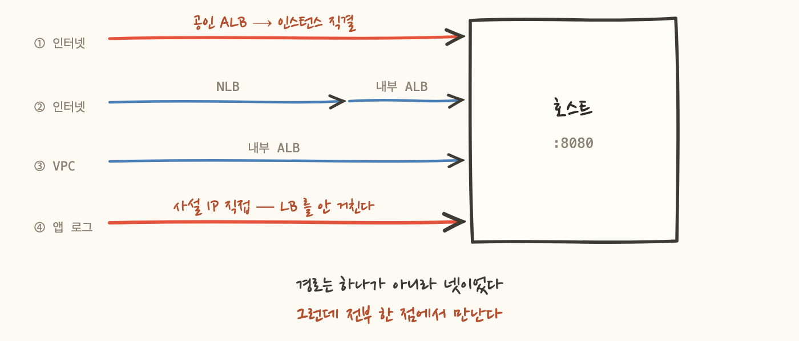
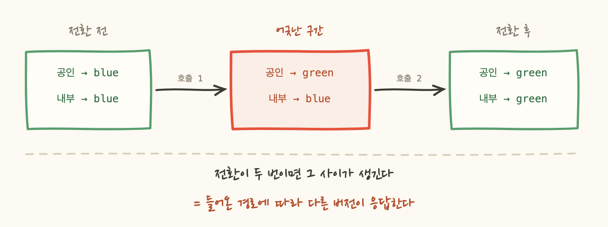
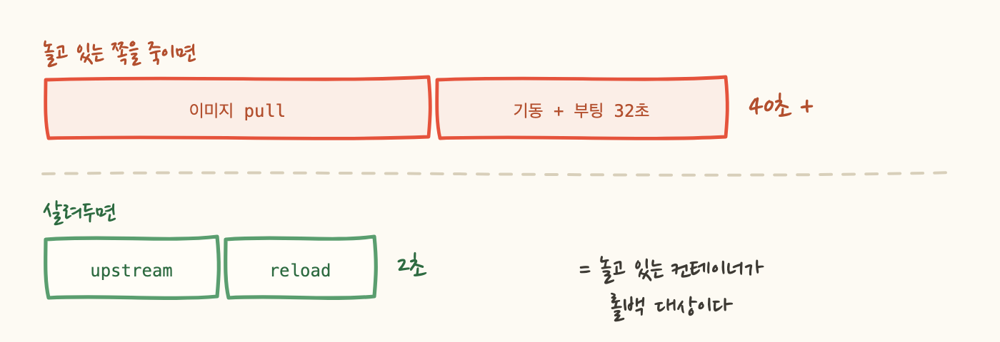
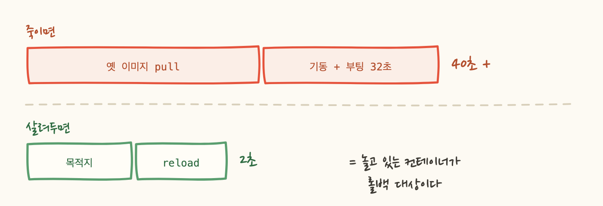

1편에서 블루그린으로 방향을 정했습니다. 이유는 롤백이었어요 — 옛 버전이 살아 있으면 되돌리는 일이 재배포가 아니라 전환이 되니까요.
이제 어디서 전환할 것인가를 정해야 합니다. AWS에서 정석은 로드밸런서 가중치예요. 준비를 다 해놓고 그 안을 버렸습니다. 그리고 그 덕분에 롤백이 2초가 됐습니다.
방식은 이렇습니다. blue 타깃그룹과 green 타깃그룹을 만들고, 리스너의 forward 규칙에 가중치를 100/0으로 두다가 전환할 때 0/100으로 뒤집어요.
전제가 두 개 필요합니다. 리스너가 가중치를 받는 형태여야 하고, 그 리스너를 바꿀 권한이 있어야 해요. 확인해보니 리스너는 이미 가중치 forward 형태였고, 권한만 붙이면 됐습니다. 여기까지는 이 안이 유력했어요.
그런데 권한을 붙이려고 이 인스턴스가 쓰는 역할이 어디에 붙어 있는지 먼저 조회했습니다.
공용 역할이었어요. 여기에 리스너 변경 권한을 주면 25대 전부가 계정 안의 아무 리스너나 바꿀 수 있게 됩니다. dev 인스턴스 하나만 뚫려도 프로덕션 트래픽을 돌릴 수 있다는 뜻이죠. 그래서 전용 역할을 새로 파고, 리스너 변경은 대상 리스너 하나로 한정했습니다.
대상 리스너 → allowed · 관계없는 리스너 → implicitDeny권한까지 확보했으니 만들면 됩니다. 그전에 타깃그룹을 어디에 붙일지 정하려고 로드밸런서를 전수 조회했어요. 그리고 이게 나왔습니다.
이름이 뒤집혀 있습니다. -internal이 붙은 쪽이 인터넷에 열려 있어요. 이름을 믿고 작업했으면 공인 경로를 내부 경로로 착각했을 겁니다.
타깃 타입까지 파고들자 실제 경로가 드러났습니다. 그리고 앱 로그를 읽다가 네 번째 경로를 찾았어요.
로드밸런서를 아예 안 거치고 인스턴스를 직접 부르는 호출이 상당수였습니다.

②는 내부 LB를 타깃으로 잡는 구조라 ③을 손보면 따라옵니다. 문제는 ①이에요. 공인 LB가 인스턴스를 직접 가리키는 별개 경로입니다. 경로가 둘이 되면서 비용이 두 배가 됐어요.
마지막 줄이 아픕니다. 리스너를 각각 호출해야 하니 그 사이에 공인은 green, 내부는 blue인 구간이 생깁니다.

그리고 결정타는 ④입니다. 사설 IP로 직접 오는 요청은 로드밸런서를 안 거치니, 가중치를 아무리 뒤집어도 계속 옛 버전에 꽂힙니다.
그림 1을 다시 보면 답이 이미 있어요. 경로가 넷인데 전부 호스트의 같은 포트로 수렴합니다.
그러면 갈아끼울 자리는 로드밸런서가 아니라 그 지점입니다. 거기에 nginx를 두고 뒤에 blue와 green을 각각 다른 포트로 띄우면, nginx의 목적지를 한 번 바꾸는 것으로 네 경로가 동시에 따라옵니다.
얻은 게 셋입니다.
앞서 판 전용 역할은 결과적으로 안 쓰게 됐습니다. 다만 공용 역할이 25대에 걸쳐 있다는 발견은 남았어요. 이 작업과 무관하게 고쳐야 할 것이었습니다.
이제 배포 한 번의 흐름입니다. 핵심은 전환 전에 검증이 들어간다는 것과, 전환이 한 줄이라는 것입니다.

③이 옛 방식에 없던 단계입니다. 연속 3회 200을 요구해요. 한 번만 확인하면 기동 직후 우연히 뜬 응답을 통과로 볼 수 있어서요.
그리고 ④에서 blue를 죽이지 않습니다. 이게 다음 장의 전부입니다.
정말 안 끊기는지는 0.2초 간격으로 계속 두드리면서 전환해 확인했습니다.
아래 줄이 중요해요. 목적지가 실제로 바뀐 게 로그에 남아 있습니다. 이게 없으면 "무중단이었습니다"는 아무것도 안 바꿔도 참인 문장이에요. 계속 200이 나오는 건 전환이 잘된 것과 전환이 안 된 것 양쪽에서 똑같이 관찰되니까요.
이제 목적이었던 부분입니다. 롤백을 싸게 만들려고 세 가지를 했어요.
운영 중에 blue와 green이 항상 둘 다 떠 있습니다. 하나는 트래픽을 받고 하나는 놉니다. 자원이 아깝게 보이지만, 놀고 있는 쪽이 롤백 대상이에요.

그리고 배포할 때마다 대기 중인 색에 덮어쓰므로 3개, 4개로 늘지 않습니다. 항상 둘이에요.
-Xmx8192m으로 하드코딩돼 있었어요. 그러니까 "항상 둘"은 이런 뜻이었습니다.JVM 1개 × 8GB = 8GB → 여유 있음JVM 2개 × 8GB = 16GB → 호스트 물리 메모리 15.6GB 초과docker start + 기동으로 약 60초예요. 그리고 칸 수와 무관하게 컨테이너에 메모리 상한을 거는 것이 먼저였습니다. 1칸으로 줄여도 상한 없는 JVM은 여전히 호스트를 얼릴 수 있으니까요.이게 없으면 위의 구조가 무의미해집니다.
배포할 때 :latest가 가리키는 실제 커밋 태그를 찾아 그걸로 띄웁니다. CI가 커밋 태그를 함께 밀어주고 있어서 가능했어요. 살려두는 것과 무엇을 살려뒀는지 아는 것은 다릅니다.
롤백 스크립트가 곧바로 목적지를 바꾸지 않습니다. 되돌릴 대상이 살아 있는지, 200을 주는지 먼저 봅니다.
급한 순간에 확인을 넣는 게 역설처럼 보이는데, 반대입니다. 확인 없이 되돌렸다가 그쪽도 안 뜨면 그때부터는 남은 선택지가 없어요. 2초 중 일부를 확인에 쓰는 게 훨씬 쌉니다.
숫자는 40초에서 2초지만, 실제로 바뀐 건 사람의 행동입니다.
순서가 뒤바뀝니다. 그리고 이게 무중단 배포에서 제일 중요한 부분이라고 생각해요. 배포가 매끄러운 건 좋은 부수 효과고, 실제로 사람을 구하는 건 되돌리기가 싸다는 사실입니다.
블루그린을 "무중단으로 배포하는 방법"으로만 이해하면 절반만 쓰는 셈입니다. 옛 버전을 살려두는 구조를 만들었으면 롤백까지 설계해야 값이 나옵니다. 살려두기만 하고 어느 버전인지 모르거나, 되돌리는 절차가 없으면 그냥 컨테이너가 하나 더 떠 있는 것뿐이에요.
정직하게 적자면 이 호스트는 OS가 이미 EOL이고 보안 패치가 백 개 넘게 밀려 있습니다. 프록시 블루그린은 그 위에 얹은 다리예요.
같은 조직이 이미 컨테이너 오케스트레이터로 자동 배포를 두 군데서 하고 있고, 이 저장소만 이미지 푸시까지만 하고 그다음이 손이었습니다. 오케스트레이터로 옮기면 블루그린이 기본 기능으로 딸려오고 OS 문제도 같이 사라져요. 새 패턴을 발명하는 게 아니라 따라잡는 일입니다.
그래도 이번에 얻은 건 남습니다. 어디서 전환할지 정하려고 경로를 전수 조회한 것, 그리고 롤백을 배포의 곁가지가 아니라 목적으로 두고 설계한 것 — 이건 오케스트레이터로 옮겨가도 그대로 씁니다.